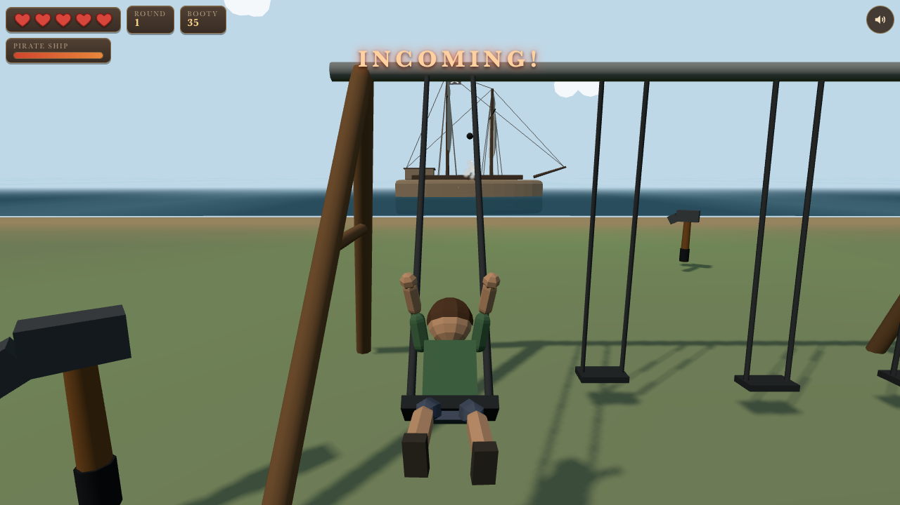

Round 1, boy pumping toward the incoming pirate ship.

No outlines — the look comes from vivid saturated color and hard two-tone light/shadow boundaries (toon ramp), chunky proportions (big head, big shoes), stylized sea splotches + foam around the hull, wind swirls, scalloped clouds, sparkles in the grass. HUD on parchment panels.
Identical shading and palette, plus a dark ink outline on silhouettes (inverted-hull pass in Three.js). Reads a bit more "comic", pops harder on small screens.